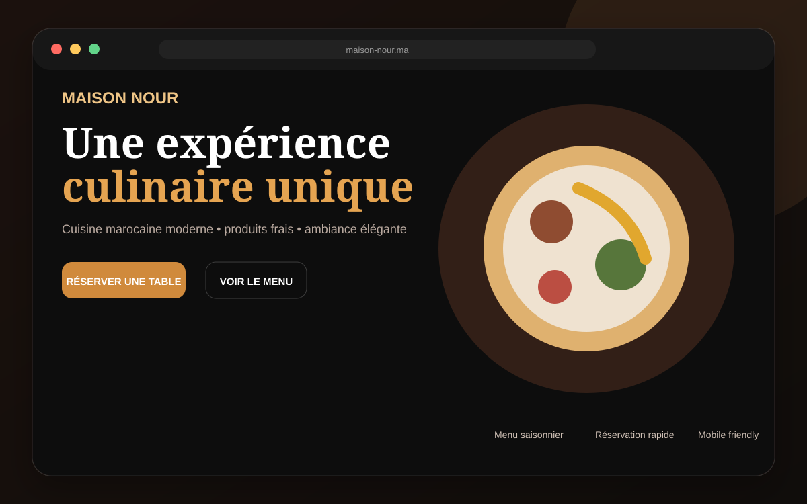
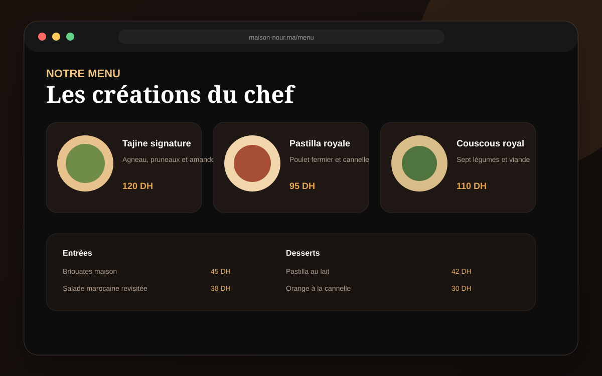
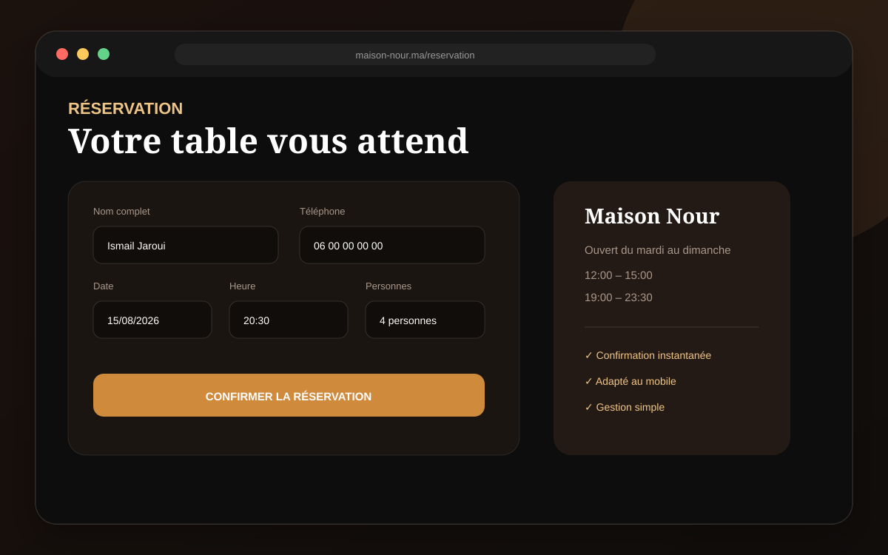
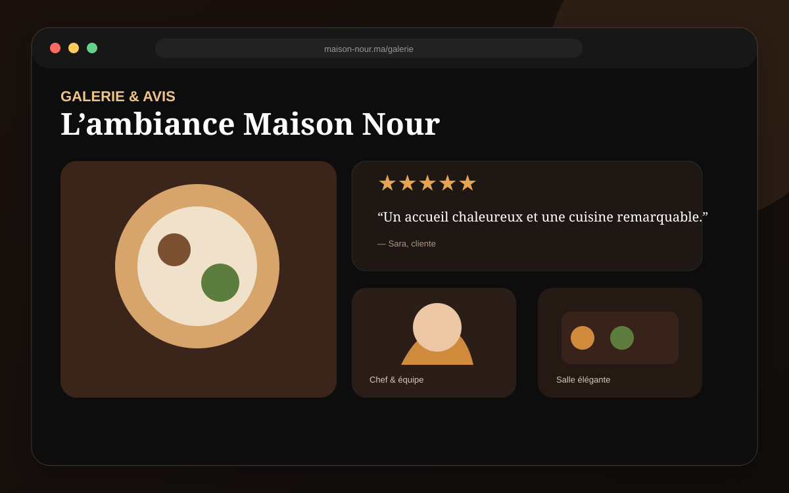

Catégories, plats, descriptions et tarifs facilement consultables.
Site vitrine premium
Restaurant Pro
Un site élégant qui présente l'identité du restaurant, son menu et simplifie les réservations.

Le projet
TypeSite vitrine
StackHTML • CSS • JavaScript
Durée cible5 à 7 jours
RôleDesign & développement complet
Objectif
Présenter l’univers du restaurant, valoriser le menu et transformer les visiteurs en réservations. L’expérience reste rapide et lisible sur ordinateur comme sur téléphone.
Les écrans ci-dessous montrent plusieurs parties du projet, et pas uniquement sa page d’accueil.
Présentation complète
Les écrans du projet
Accueil, fonctionnalités principales et espace de gestion.



Fonctionnalités réellement intégrées
Formulaire clair avec date, heure et nombre de personnes.
Mise en valeur du lieu, des plats et de la satisfaction client.
Affichage adapté aux téléphones, tablettes et ordinateurs.
Transitions discrètes pour une expérience premium.
Adresse, horaires et accès rapide à la réservation.
Vous souhaitez un projet similaire ?
Expliquez votre activité et recevez une proposition adaptée à votre budget.
Parler du projet